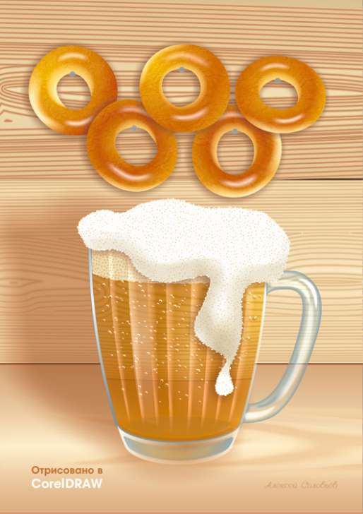

В янтарных тонах
Solowejka / 26.02.2014, 04:45
Форум:
Столько уже этих кружек с пивом нарисовано. Но тут как-то понадобилось изображение и вот, решил свою нарисовать. Вектор 100 %. На баранках только текстуры добавлены из штатного набора.
Столько уже этих кружек с пивом нарисовано. Но тут как-то понадобилось изображение и вот, решил свою нарисовать. Вектор 100 %. На баранках только текстуры добавлены из штатного набора.
Норм, только где пузырьки? Пиво без пузырьков - не пиво :)
Ну и с пеной нужно что то делать :)
Спасибо за совет.

классно, но я когда то попробовал поставить светлое пиво в бокале разведённое 50% с водой, до больше прозрачности, со светом сбоку / сверху получается, что не видно заднего фона более чем 10%... а у вас он как будто 80+% видно... как бы свет убивает прозрачность жидкости и затемняет обратную сторону сосуда...